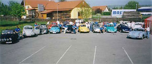
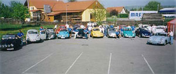

Der Käferclub Lengenfeld wurde am 4. Mai. 1993 gegründet.
Unser Ziel war es, ein Käfertreffen der anderen Art zu organisieren. Nach Absprache mit den Kellerbesitzern hatten wir Grünes Licht, und so stand dem 1. Käfertreffen mit Kellergassenfest nichts im Wege.
 

Am 20.7.1993 war es dann soweit, rund 60 Fahrzeuge kamen zum 1.Käfertreffen des Käferclubs Lengenfeld. Die Kellerbesitzer hatten ein reichhaltiges kulinarisches Angebot und erlesene Lengenfelder Weine zur Auswahl.
Der Erfolg war auf unserer Seite, und weitere Käfertreffen wurden organisiert, wo immerhin schon 220 Fahrzeuge kamen.
Weitere Aktivitäten des Clubs:
- Organisation des jährlichen Käfertreffens
- Besuch von anderen Käfertreffen
- Clubinterne Ausfahrten
- Brauchtumspflege in der Gemeinde
- Pflege und Wartung der Käfer von Mitgliedern
Vorstand
Obmann:
Markus Berner, 16.09.1972
Obmann Stv.:
Andreas Gwiss, 08.11.1984
Kassier:
Erich Strasil, 19.10.1948
Kassier Stv.:
Michael Gibhart, 03.06.1980
Schriftführer:
Philipp Wohlgemuth, 27.05.1981
Weitere Vorstandsmitglieder:
Roland Resch, 18.07.1968
Udo Ettenauer, 26.09.1969